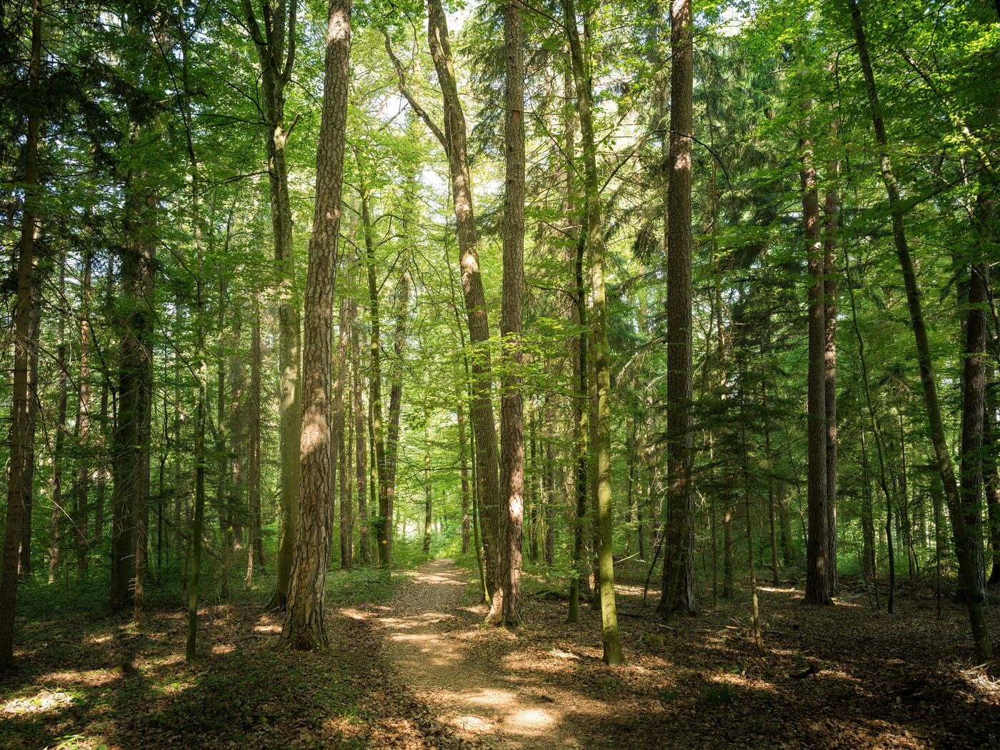

Welcome to My Outdoor Guide
Ontario has many beautiful outdoor spaces. I enjoy learning about different places where people can go for a walk, relax, and enjoy fresh air.
Exploring Forest Trails
A simple walk outdoors can be a nice break from a busy day. Forest trails offer quiet surroundings and a chance to appreciate nature.
